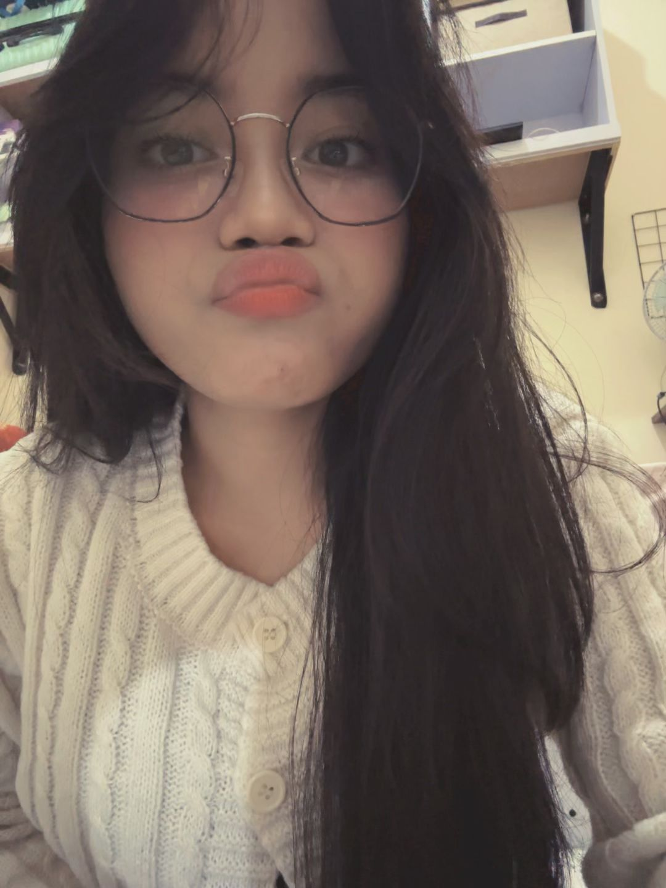
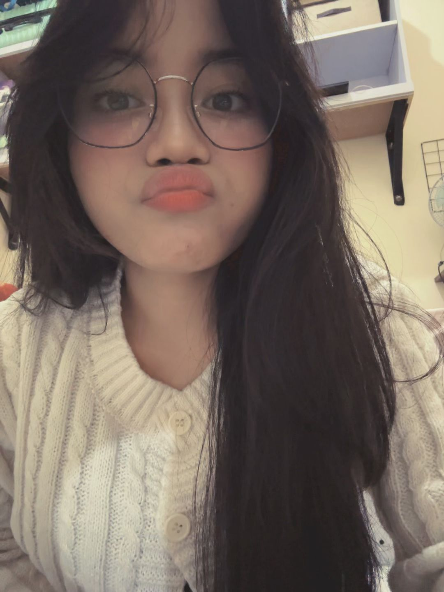
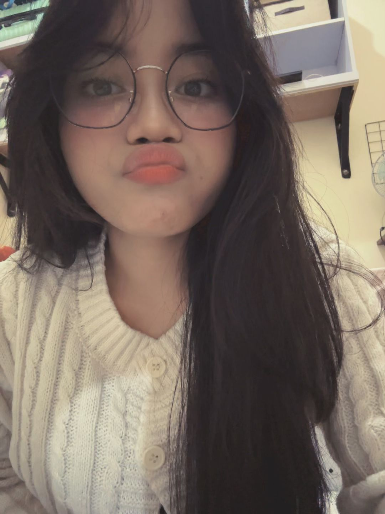

Pesona Fifi
 

Senyummu punya cara sendiri untuk menenangkan dan membuat hari-hariku terasa lebih baik.
Ada ketenangan dan kejujuran di matamu yang selalu membuatku merasa aman dan dipahami.
Momen-momen candidmu, tanpa sadar, menunjukkan betapa memesonanya dirimu yang sejati, apa adanya.

Caramu membuatku merasa nyaman.
Pikiran cerdasmu yang selalu memberiku sudut pandang baru.
Perhatian kecilmu yang tulus.
Tawamu yang renyah dan menular.
Semangatmu untuk mencoba hal baru.
Bagaimana kamu bisa membuatku tersenyum, bahkan di hari terburuk.